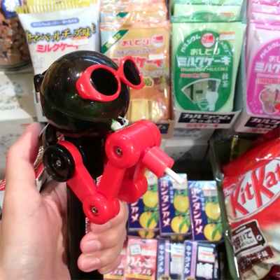

짤은 인스타에 올려놓은 짧은 동영상 ㅋㅋㅋ
느므 내취향이라 무한 돌려보면서 혼자 켈켈거리고 있습니다 ^^;;
계속해서 도쿄에서 뒹굴거리는중
벌써 2주가 지났다니 7월이 다 끝나간다니 ㅡㅡ;;
시간정말 빠르네욤;;
다시 와도 잼나고 볼것도 많고
이래저래 확실히 도쿄는 매력적인거 같습니다 :)
벌써부터 11월 디자인페스타 기간에 맞춰
함 더 올까...란 생각을 하고있어요 ^^;;
유학이나 외쿡인 로동자가 아닌 여행자 신분으로
일케 오래 장기체류하는건 처음이라 신선합니다 :)
최고 오래 여행해본게 북유럽 4개국 - 16박 17일 이었는데
이거야 나라별로 4일씩 묵은거니까
한 장소에 일케 장기체류하는거랑은 또 다르고
기회가 있다면 다른 나라도 2주 - 4주 정도 머물러 보고 싶네용
늦게자고 늦게 일어나서 느지막하게 슬렁슬렁 관광하다 돌아오고
숙소돌아와서 로동하고 ㅋㅋ
1.
아무리 생각해도 이 더워는 정상이 아닌거 같음;;;;
근데 그 와중에도 길에 다니는 아가씨들은
어쩜 다들 피부가 보송보송해 보이지? 신기해라
나능 얼굴 벌개져서 땀 줼줼 흘리고있는데 ㅜㅜ
2.
사람들 옷차림 구경하는 재미가 있습니다
서울이 빡세게 갖춰입은 느낌이라면
여긴 참 다른의미로 빡세게 아기자기 하군욤^^;;
아이템도 그렇고 귀여워요 ㅎㅎ
그리고 확실히 여기오니 내가 참 키도 커보이고 덩치고 커보이고
다리고 대따 굵은거 같고 ㅜㅜ 흑흑흑흑
급반성하면서 컵라면과 쟈가리코를 좀 줄여야지...란 생각을 잠깐했습니다
(안먹겠다고는 말 못함 ^^;;)
3.
영쿡서 대학다닐때는 나를제외한 하우스메이트 3명이
전부 일본아가씨들 + 런던 아닌 시골서 학교다녔더니 한국사람 없음
의 결과로 - 영어/일본어만 사용했고
졸업후 런던상경(...)해서 회사댕길때
약 4-5년 정도는 일본어를 전혀 사용하지 않았는데
그래도 막상 오니까 그냥저냥 일상회화는 잘 나오네욤
확실히 언어는 어릴때 배워둔 스케이트나 수영이랑 비슷한것 같습니다.
한동안 사용안하다가 다시 시작하면
초반에는 어버버 거리다가두 또 금방 옛날에 하던실력
나오고 그런거 같아용
단지 늠 오랜만이라 지하철 이라던가
이것저것 시스템이 익숙치 않아서 직원분들에게 물어보면
유창한 일본어로 넘 기본레벨 질문들을 해대니까
다들 표정이
얘는 머지...=_=;; 일케 됩니다 ㅋㅋㅋㅋ
4.
오랜만에 느껴보는 이나라의 상술은 정말 무섭네요
이건 뭐 가게들이 끝나질 않아 ㅋㅋ
도쿄역 갔다가 혼 나가는줄 케케
5.
오기전 고프로의 저렴이라는 SJ6000을 구입했습니다
그리고 첨 찍어본 영상 :)
이케부쿠로 선샤인시티 아쿠아리움 입니당:)
SJ6000 요거 쓸만해요 ^^
여행기는 짬짬히 네이버 블로그에 올리고있습니다
링크는 요기:
6.
마무리는 일 이야기
엄청 신경쓰이던 굵직한 일은 해결해서 한숨 돌렸습니당
이것때문에 2주 내리 오만승질 다 부렸는데ㅋㅋ
어느정도 해결되었어요 ㅜㅜ 흑흑 힘들었어 ㅜㅜ
이제 다음 스테이지로....OTL
오늘은 이걸로 끗 :)